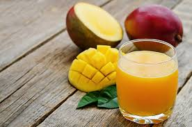

<DOCTYPE html>
  <html>
  <head>
  <title>Juice</title>
  <link href="css/styles.css"rel="stylesheet"type="text/css">
  <link href="../css/bootstrap.css"rel="stylesheet"type="text/css">
  <link href="../css/aos.css"rel="stylesheet"type="text/css">
  <script src="../js/scripts.js"charset="utf-8"></script>
  <script src="../js/aos.js" charset="utf-8"></script>
  <script src="../js/jquery-3.3.1.js" charset="utf-8"></script>
</head>
    <body>
      <div class="container-fluid">
      <div class="float-left-area">
        <div data-aos="fade-up-right" data-aos-duration="1000" class="inner-left">
        <h2><b>About us</b></h2>
        <p>Culinary Experience is a webpage where we get to show you how to prepare local <b>Kenyan Cuisine.</b></p>
      </div>
      </div>
      <div data-aos="fade-up-right" data-aos-duration="1000" class="float-right-area">
        <div class="inner-right">
          <ul class="nav nav-tabs">
            <li class="active"><a>Juice</a><li>
            </ul>
            <h3><b>Ingredients Needed</b></h3>
            <ol>
              <li>A fruit of choice maybe a mango.</li>
              <li>A blender.</li>
              <li>A knife.</li>
              <li>A peeler.</li>
            </ol>
            <h3><b>Procedure.</b></h3>
              <ul>
              <li>Peel the mango.</li>
              <li>Cut the mango flesh into little pieces.</li>
              <li>Pour the pieces in a blender.</li>
              <li>Blend the pieces of the fruit to a thick liquid.</li>
              <li>Pour the juice into a glass.</li>
              <li>Serve while cold.</li>
            </ul>
            
      </div>
            </ul>
          </div>
      <script>
    AOS.init();
  </script>
    </body>
  </html>
